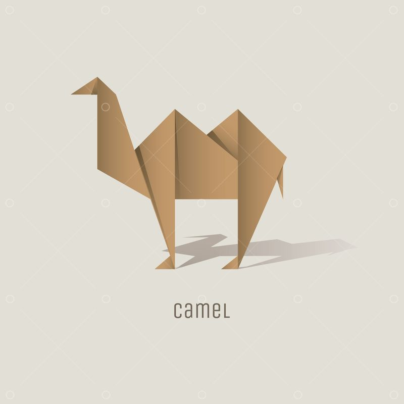
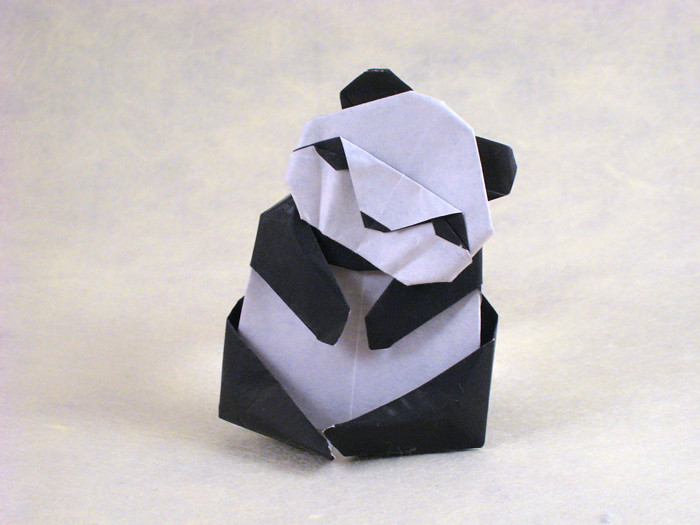

Origami Designs
Click here for some examples of origami
Click on the images to learn how to make them

Interesting facts about a CAMEL:
- Camels have three sets of eyelids and two rows of eyelashes to keep sand out of their eyes.
- Camels have thick lips which let them forage for thorny plants other animals can't eat.
- Camels can completely shut their nostrils during sandstorms.
- Click here for more facts

Interesting fun facts about pandas
- Pandas have 6 toes to grasp bamboo..
- An adult panda can eat 12–38 kilos of bamboo per day!
- Prehistoric pandas lived up to 2 million years ago.
- Click here for more facts